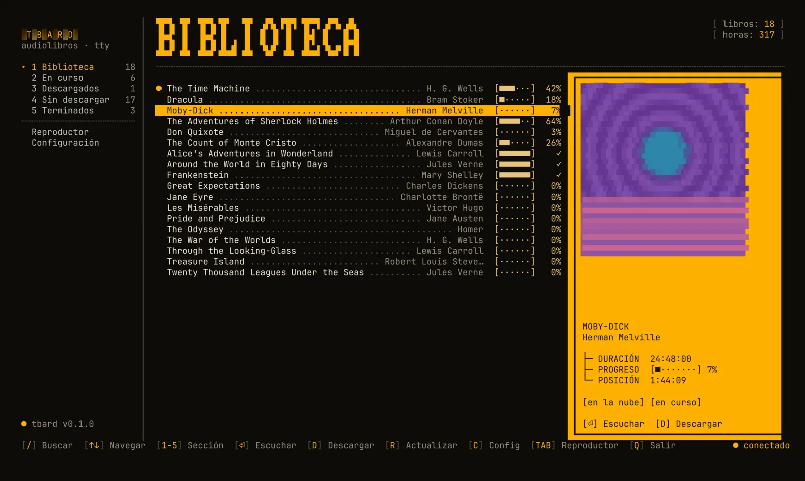
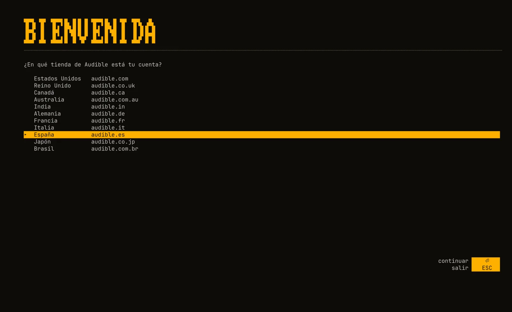
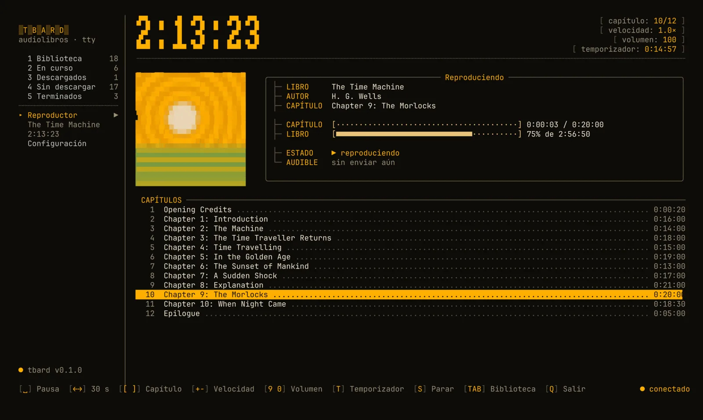
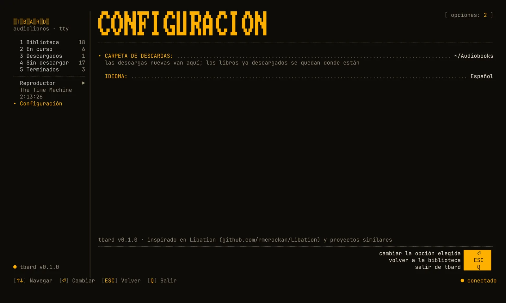

tbard
- sistemas: linux · macos · windows
- idiomas: en · es
- telemetría: ninguna
- licencia: gpl-3.0
Gestor y reproductor de audiolibros para la terminal. tbard reúne tu biblioteca de audiolibros en un solo lugar y la reproduce desde la terminal. Se conecta a tu cuenta de Audible para ver los libros que tienes, los descarga en la mejor calidad disponible divididos en un archivo por capítulo, los reproduce con mpv y mantiene tu posición sincronizada con la app de Audible del móvil.

Biblioteca
Búsqueda aproximada, secciones (en curso, descargados, terminados…) y portadas en la terminal, con gráficos de Kitty/Ghostty o medios bloques.
Descargas
La mejor calidad que ofrece Audible, dividida sin pérdida en un .m4b por capítulo con título, número de pista y portada.
Reproductor
Capítulos, ±30 s, velocidad de 0,5× a 3×, volumen y temporizador para dormir. Velocidad y volumen se recuerdan por libro.
Sincronización
Tu posición va y viene con la app de Audible. Sin conexión, espera en una cola y se envía después.
Privado por diseño
Las credenciales se guardan cifradas con una clave en el llavero del sistema. Sin telemetría; nada sale de tu equipo salvo hacia Amazon y Audible.
Tu terminal, tus colores
Usa la paleta de tu terminal, o un colors.toml que se recarga en vivo (incluye plantilla para Noctalia).
Aviso. tbard es una herramienta no oficial, sin relación con Audible ni Amazon. Usa la API privada de Audible, que puede cambiar en cualquier momento. Úsalo solo con libros que hayas comprado y para escucharlos tú. Quitar el DRM puede estar restringido donde vives; eres responsable de cómo lo uses.
Instalación
tbard necesita mpv (reproducción) y ffmpeg (descifrado y división). Los gestores de paquetes de abajo los instalan por ti.
Cualquier distribución
curl --proto '=https' --tlsv1.2 -LsSf https://github.com/abelland-lgtm/tbard/releases/latest/download/tbard-installer.sh | shDespués instala mpv y ffmpeg con tu gestor de paquetes:
- Debian / Ubuntu
sudo apt install mpv ffmpeg - Fedora (ffmpeg de RPM Fusion)
sudo dnf install mpv ffmpeg - Arch
sudo pacman -S mpv ffmpeg
Homebrew en Linux
brew install abelland-lgtm/tap/tbardHomebrew
brew install abelland-lgtm/tap/tbardInstala también mpv y ffmpeg. Sin Homebrew:
curl --proto '=https' --tlsv1.2 -LsSf https://github.com/abelland-lgtm/tbard/releases/latest/download/tbard-installer.sh | shScoop
scoop bucket add extras; scoop bucket add tbard https://github.com/abelland-lgtm/scoop-bucket; scoop install tbardInstala también mpv y ffmpeg. Sin Scoop, usa el instalador y luego instala mpv y ffmpeg por tu cuenta:
powershell -ExecutionPolicy Bypass -c "irm https://github.com/abelland-lgtm/tbard/releases/latest/download/tbard-installer.ps1 | iex"También hay un instalador .msi en la página de versiones.
Con Rust
cargo install tbard --lockedNix
nix run github:abelland-lgtm/tbardBinarios
Para todos los sistemas en la página de versiones.
Comprobar la instalación
tbard doctorMuestra dónde guarda tbard sus archivos y si mpv, ffmpeg y tu sesión están listos.
Primeros pasos
tbardLa primera vez, tbard te pide el idioma y tu tienda de Audible, abre el inicio de sesión de Amazon en el navegador y te pide pegar la dirección a la que llegas. Después abre tu biblioteca.


Desde la línea de comandos
- login
tbard login --locale es— iniciar sesión (us, uk, ca, au, in, de, fr, it, es, jp, br) - library
tbard library— actualizar y listar tus libros - play
tbard play dune— reproducir, descargando antes si hace falta - download
tbard download proyecto hail— solo descargar - sync
tbard sync— enviar las posiciones pendientes - doctor
tbard doctor— revisar programas, carpetas y sesión - logout
tbard logout— quitar este dispositivo de Amazon y borrar las credenciales
Teclas

Biblioteca
- buscar/
- sección1–5
- escuchar⏎
- descargard
- actualizarr
- configuraciónc
- reproductortab
- salirq
Reproductor
- pausaespacio
- ±30 segundos← →
- capítulo[ ]
- velocidad+ -
- volumen9 0
- temporizadort
- parars
- bibliotecatab
Sincronización
- al empezartbard usa la posición más reciente entre la local y la de Audible. Si las dos cambiaron desde la última sincronización y se separan más de dos minutos, te pregunta.
- escuchandola posición se guarda en local cada 5 segundos y se envía a Audible cada 2 minutos, al pausar y al parar.
- sin conexiónlas posiciones esperan en una cola y se envían cuando vuelve la conexión (o con
tbard sync). - precisiónlos archivos de capítulo coinciden con la app de Audible al milisegundo: el minuto que ves en tbard es el que muestra tu móvil.
Privacidad
tbard guarda todo en tus propias carpetas de usuario. No se comparte nada con otros usuarios del equipo, y nada sale de él salvo hacia Amazon y Audible. No hay telemetría.
| Qué | Linux | macOS | Windows |
|---|---|---|---|
| Configuración y tema | ~/.config/tbard | ~/Library/Application Support/tbard | %APPDATA%\tbard\config |
| Credenciales y base de datos | ~/.local/share/tbard | ~/Library/Application Support/tbard | %APPDATA%\tbard\data |
| Caché de portadas | ~/.cache/tbard | ~/Library/Caches/tbard | %LOCALAPPDATA%\tbard\cache |
| Registro (log) | ~/.local/state/tbard | ~/Library/Application Support/tbard/logs | %LOCALAPPDATA%\tbard\data\logs |
| Audiolibros | ~/Audiobooks | ~/Audiobooks | %USERPROFILE%\Audiobooks |
Credenciales
Al iniciar sesión, tbard se registra como un dispositivo en tu cuenta de Amazon, como un móvil con la app de
Audible. Sus tokens y su clave privada se guardan cifrados (AES-256-GCM) en credentials.enc; la clave
vive en el llavero del sistema (Llavero de macOS, Administrador de credenciales de Windows, GNOME Keyring o
KWallet). Una copia del archivo no sirve en otro equipo ni en otra cuenta.
Permisos
En Linux y macOS las carpetas se crean con 0700 y los archivos privados con 0600. En
Windows están dentro de tu perfil de usuario. El registro nunca incluye tokens ni enlaces de descarga.
¿Sin llavero?
En un equipo sin llavero (un servidor, un escritorio mínimo) tbard guarda credentials.json sin
cifrar, legible solo por ti, y te avisa.
Borrarlo todo
Ejecuta tbard logout: quita el dispositivo de tu cuenta de Amazon y borra las credenciales y la
entrada del llavero. Después borra las carpetas de arriba.
Configuración
config.toml está en la carpeta de configuración. La pantalla de configuración (c) lo escribe
por ti.
library_dir = "~/Audiobooks" # adónde van las descargas nuevas
language = "es" # "en" o "es"
mpv_path = "/opt/mpv/bin/mpv" # solo si mpv no está en el PATH
ffmpeg_path = "C:\\tools\\ffmpeg.exe"Colores
tbard usa los colores de tu terminal. Para cambiarlos, crea colors.toml junto a
config.toml; tbard lo recarga mientras está abierto. Con
Noctalia, la plantilla incluida lo genera a partir de
tu fondo de pantalla.
primary = "#ffb000"
on_primary = "#1a1200"
secondary = "#e8c37a"
tertiary = "#ff7a45"
error = "#ff5f56"
on_surface_variant = "#9b8f7a"
outline = "#5b5142"
Nix y home-manager
inputs.tbard.url = "github:abelland-lgtm/tbard";
imports = [ inputs.tbard.homeManagerModules.default ];
programs.tbard.enable = true;Problemas
“no se encontró mpv” o “no se encontró ffmpeg”
Instálalos (ver Instalación) o pon mpv_path / ffmpeg_path
en config.toml. tbard doctor muestra lo que encuentra.
No se abrió la página de inicio de sesión
La pantalla de inicio de sesión también muestra la URL: ábrela tú, inicia sesión y pega la dirección final
(empieza por https://www.amazon…/ap/maplanding).
“sin llavero del sistema”
Instala y desbloquea un proveedor de Secret Service (GNOME Keyring o KWallet) y vuelve a iniciar sesión. Mientras tanto, las credenciales se guardan sin cifrar, legibles solo por ti.
Las portadas se ven pixeladas
Tu terminal no tiene protocolo de gráficos, así que tbard dibuja las portadas con medios bloques. Kitty, Ghostty, WezTerm e iTerm2 muestran imágenes de verdad.
La posición no llegó a mi móvil
Sin conexión, las posiciones esperan en una cola. Ejecuta tbard sync y vuelve a abrir la app
de Audible. El registro (ver Privacidad) dice qué pasó; con TBARD_LOG=debug
da más detalle.
Cualquier otra cosa: abre un issue.
Inspiración
tbard está inspirado en Libation y proyectos similares. Lleva a la terminal la idea de Libation de una biblioteca personal de audiolibros sin DRM, junto con un reproductor y la sincronización de la posición.
- Libationla inspiración principal: una app de escritorio que respalda tu biblioteca de Audible en archivos sin DRM.
- audible-cliy la librería audible, cuyo trabajo documentando la API de Audible hizo posibles proyectos como este.
- Toutuiun reproductor de audiolibros para la terminal que inspiró el reproductor de tbard.
- mpv · ffmpegla reproducción y el trabajo con el audio.
tbard es una implementación independiente y no contiene código de estos proyectos.